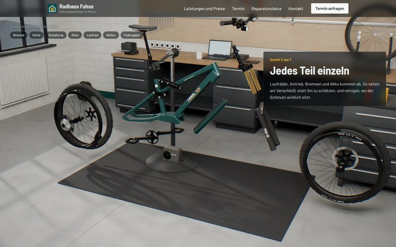
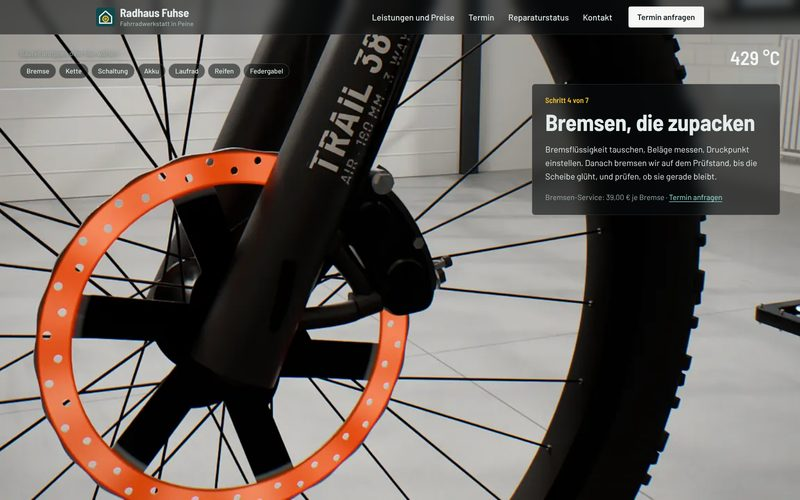
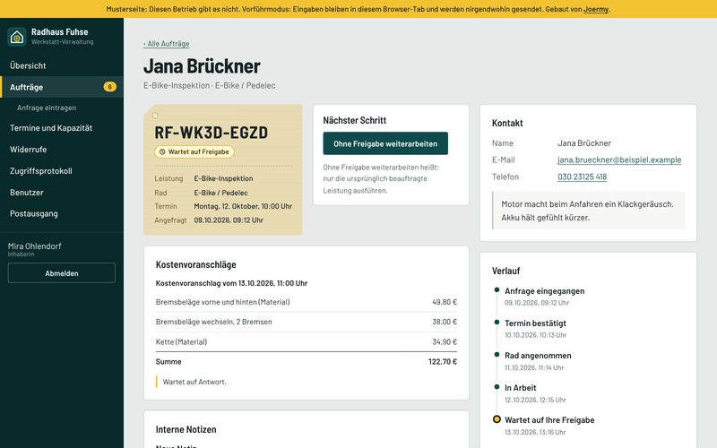
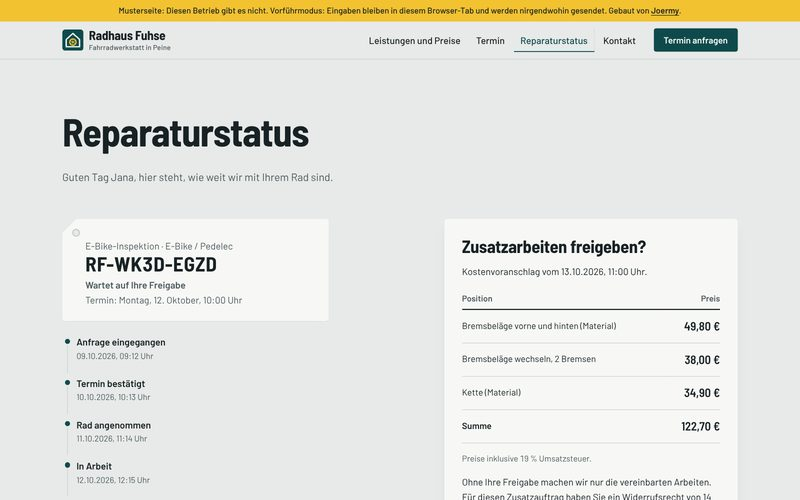

Websites — 2026
Radhaus Fuhse
Terminbuchung, Reparaturstatus und Kostenvoranschläge mit Online-Freigabe, dazu eine Verwaltung mit Zwei-Faktor-Anmeldung, Rollen und Zugriffsprotokoll. Auf der Startseite zerlegt sich ein fotorealistisch gerendertes E-Bike.

Musterprojekt. Betrieb, Anschrift, Kundinnen, Kunden und Aufträge sind frei erfunden, die Umsetzung ist es nicht. Fotos gibt es keine: E-Bike und Werkstatt sind eigene Arbeit in Blender, gerendert mit Cycles. Die Verwaltung lässt sich ausprobieren unter /verwaltung/ mit dem Benutzer inhaberin und dem Passwort Werkstatt-Vorfuehrung; den Code der Authenticator-App zeigt die Anmeldeseite an.
Überblick
Eine Website für eine erfundene Fahrradwerkstatt in Peine, die nicht nur zeigt, sondern arbeitet: Kundinnen und Kunden buchen einen Termin, verfolgen ihre Reparatur über einen persönlichen Link und geben Zusatzarbeiten online frei. Die Werkstatt erledigt alles Übrige in einem eigenen, geschützten Bereich. Die Startseite erzählt eine Reparatur in sieben Kapiteln, an einem E-Bike, das vollständig als 3D-Modell gebaut ist.
Die Aufgabe
Sobald eine Website Kundendaten annimmt, wird aus der Visitenkarte ein System mit Pflichten: Die Daten müssen sicher liegen und nach festen Fristen wieder verschwinden, Einwilligungen müssen nachweisbar sein, Aufträge über die Website brauchen Widerrufsbelehrung und Widerrufsbutton. Kleine Betriebe lösen das oft mit drei Fremddiensten, die jeder eigene Cookies, Verträge und Kosten mitbringen.
Der Ansatz
Alles aus einer Hand und ohne Fremdanbieter. Buchung, Status, Freigabe und Verwaltung laufen auf dem eigenen Server, Personendaten liegen verschlüsselt und löschen sich nach Ablauf der Fristen selbst. Die Kundschaft kann ihre Daten jederzeit herunterladen oder löschen, und ohne Klick lädt nichts von fremden Servern.
Auf der Startseite geht ein E-Bike einmal durch die Werkstatt: Ein Lichtvorhang tastet es ab, es zerlegt sich, schaltet durch zwölf Gänge, die Bremsscheibe glüht auf dem Prüfstand, das Laufrad wird zentriert und der Akku kommt heraus. Jedes Bauteil lässt sich antippen und zeigt Preis und Leistung dazu.


Die Verwaltung
Anmeldung mit Passwort und Code aus der Authenticator-App, beim ersten Mal mit Pflicht zum eigenen Passwort und zu Ersatzcodes. Die Übersicht zeigt die Termine des Tages, die nächsten sieben Tage und was offen ist. Jeder Auftrag hat seinen Anhänger wie das Rad am Tresen, mit Status, Kostenvoranschlag aus der Preisliste, internen Notizen, Verlauf, Auskunft und Löschung auf Knopfdruck.
Die Kundschaft sieht denselben Auftrag über ihren persönlichen Link, ohne Konto: Verlauf, Kostenvoranschlag und den Knopf, um Zusatzarbeiten zahlungspflichtig freizugeben. Danach kommt die Vertragsbestätigung mit Widerrufsbelehrung per Mail, und der Widerrufsbutton nach § 356a BGB steht auf jeder Seite bereit. Wochenplan, Schließtage, Benutzer mit Rollen und das Zugriffsprotokoll pflegt die Inhaberin selbst.



Das System
PHP 8.3 ohne Framework, SQLite als Datenbank. Name, E-Mail, Telefon und Notizen liegen mit XChaCha20-Poly1305 verschlüsselt in der Datenbank, jedes Feld an seinen Auftrag gebunden; gesucht wird über einen HMAC-Index statt über Klartext. Passwörter mit Argon2id, Zwei-Faktor-Codes mit Schutz vor Wiederverwendung, Sitzungen im __Host-Cookie, jede Änderung mit CSRF-Token, jeder Zugriff auf einen Auftrag im Protokoll. Eingaben nur als JSON mit fester Feldliste, Drosselung ohne gespeicherte IP-Adresse, Content-Security-Policy ohne Inline-Skripte. Sicherungen laufen täglich und verschlüsselt.
E-Bike und Werkstatt entstehen per Python-Skript in Blender: ein vollgefedertes E-Mountainbike mit rund 550.000 Flächen, darunter Federgabel, 12-fach-Kassette, Vierkolbenbremsen und Mittelmotor, dazu Werkbank, Werkzeugwand und Fensterband. Die Kette ist physikalisch gelegt, 130 Glieder über Kettenblatt, Ritzel und Schaltröllchen, der Käfig des Schaltwerks hält beim Schalten die Länge. Cycles rendert die Reparatur mit Pfadverfolgung, Bewegungs- und Tiefenschärfe als Bildfolge, die beim Scrollen überblendet; im Browser läuft dafür nur ein Canvas, kein WebGL.
Ergebnis
84 automatische Tests, PHPStan auf Stufe 8 ohne Fehler, eigener Rechtscheck nach DSGVO, TDDDG, BGB und BFSG ohne offene Befunde, WCAG-Prüfung mit axe ohne Verstöße. Die Vorführfassung läuft auf GitHub Pages; dort spielt ein nachgebauter Server im Browser die Schnittstelle nach, Eingaben bleiben im Tab. Für den echten Betrieb liegen Konfigurationen für Apache und nginx bei.